Maria Julia, uma garotinha de 4 anos de idade, encontrou um gatinho indefeso na rua. Ela o chamou de
Estrelinha por causa de seus olhos brilhantes.
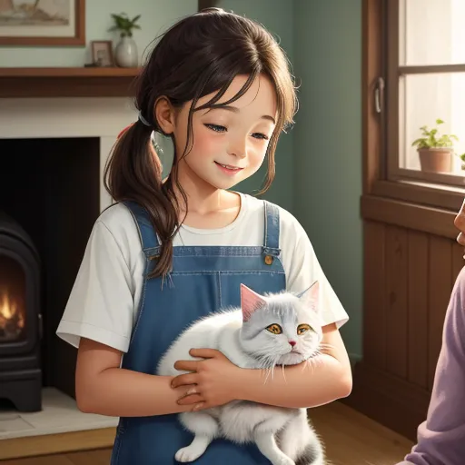
Maria Julia levou Estrelinha para sua casa e apresentou-o ao seu avô. Ele era um homem sábio que
sempre tinha uma história para contar.
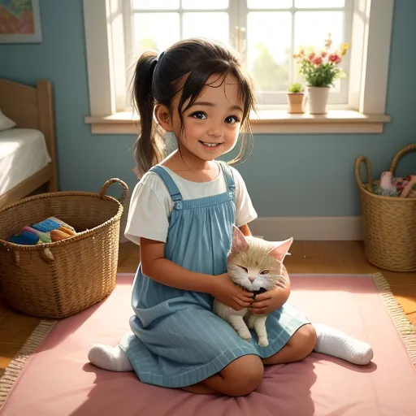
O avô ensinou Maria Julia a cuidar de Estrelinha. Ela aprendeu a alimentá-lo, brincar com ele e até
fazer uma cama quentinha para ele.
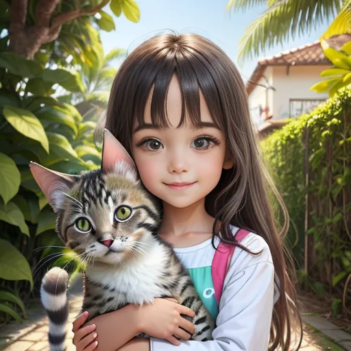
Todos os dias, Maria Julia e Estrelinha exploravam os arredores da casa. Ela mostrava as belezas do
Ceará para ele e o ajudava a se familiarizar com a nova casa.
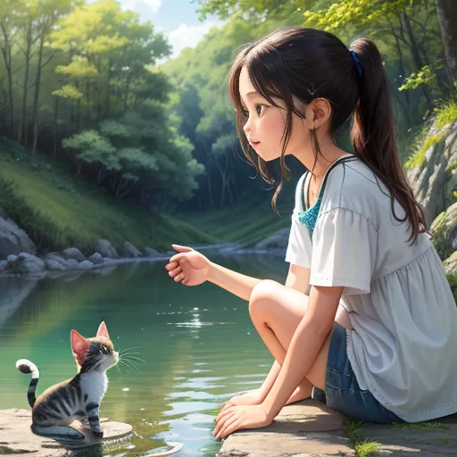
Uma vez, eles encontraram um lago próximo à casa. Estrelinha ficou com medo da água, mas Maria Julia
o ajudou a superar seu medo.
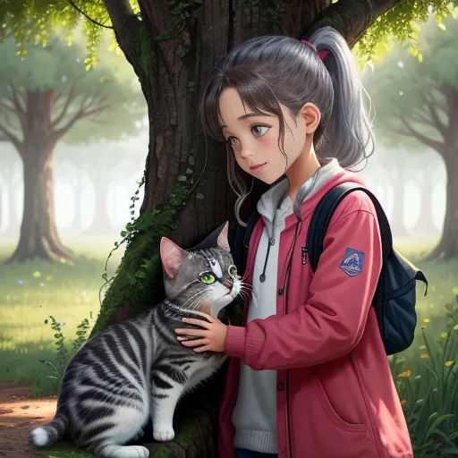
Estrelinha era curioso e desajeitado. Uma vez, ele subiu em uma árvore e ficou preso. Maria Julia e
seu avô precisaram resgatá-lo.
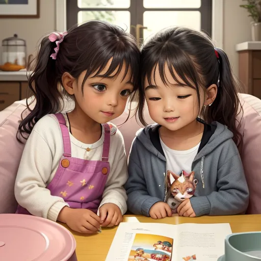
Estrelinha cresceu e se tornou um gato corajoso e amoroso. Ele se aventurava pela propriedade
durante o dia, mas sempre voltava para dormir ao lado de Maria Julia.
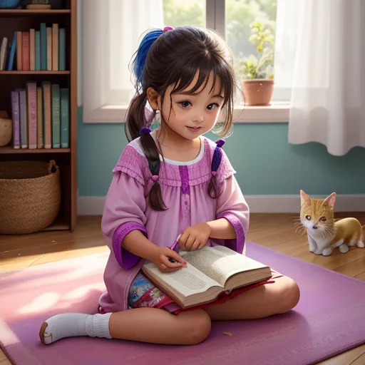
Maria Julia sempre contava histórias para Estrelinha. Ela falava sobre os ensinamentos de seu avô e
as lendas do Ceará. Estrelinha sempre a escutava atentamente.
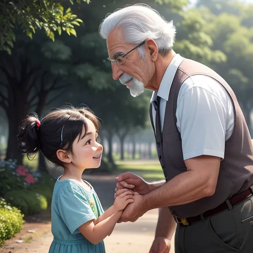
Um dia, Estrelinha desapareceu. Maria Julia ficou preocupada e começou a procurá-lo. Ela chamou o
avô para ajudá-la.
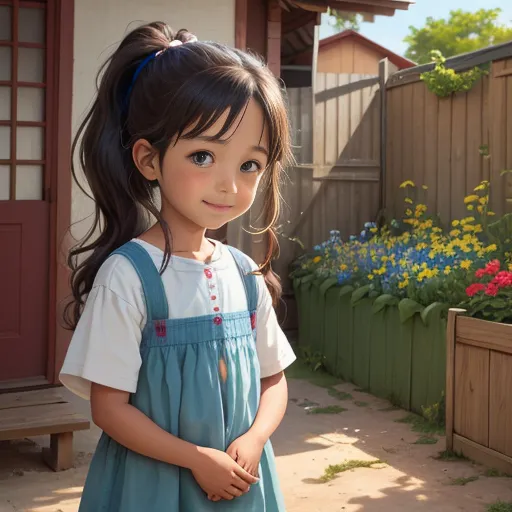
Eles procuraram por Estrelinha por todo o lugar, mas ele parecia ter evaporado. Maria Julia estava
desolada, mas manteve a esperança.
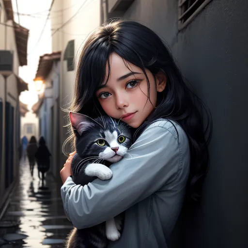
No terceiro dia, quando Maria Julia estava quase perdendo a esperança, ela ouviu um miado familiar.
Ela seguiu o som e encontrou Estrelinha.
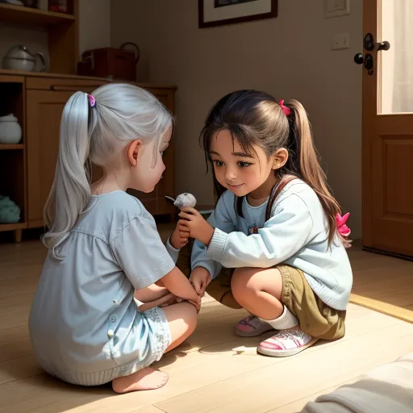
Estrelinha estava com um machucado na pata, mas estava bem. Maria Julia o levou para casa e cuidou
dele com a ajuda do seu avô.
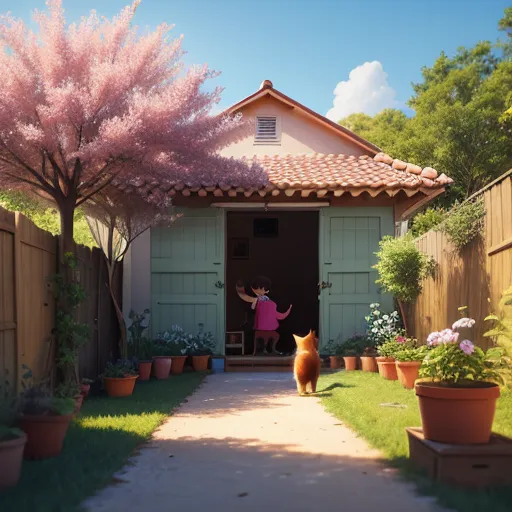
Com o tempo, o machucado de Estrelinha sarou e ele voltou a ser o gato aventureiro e carinhoso de
sempre. Maria Julia estava aliviada e feliz.
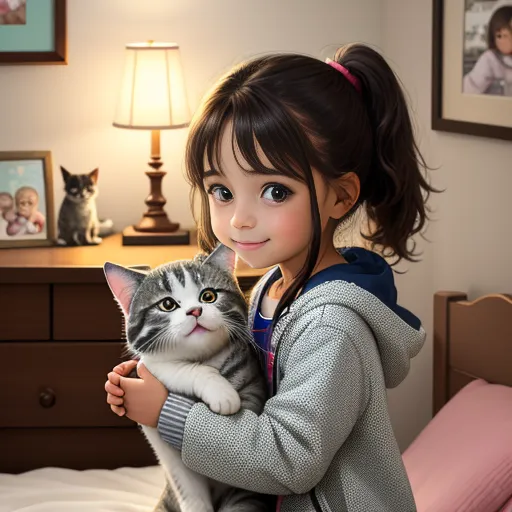
Meses se passaram e Estrelinha agora era um gato adulto. Ele ainda se aventurava, mas sempre voltava
para Maria Julia. A menina e o gato compartilhavam um vínculo inquebrável.
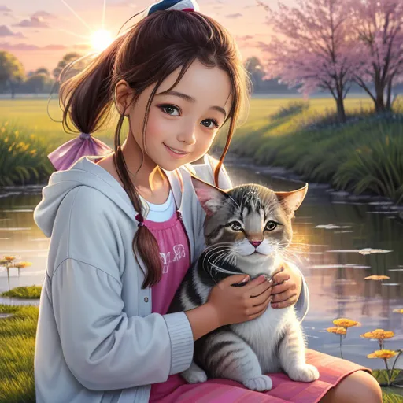
Certo dia, Estrelinha trouxe um presente para Maria Julia. Era uma pequena flor, delicadamente
colocada em seu colo. Maria Julia sorriu, agradecendo seu amigo fiel.
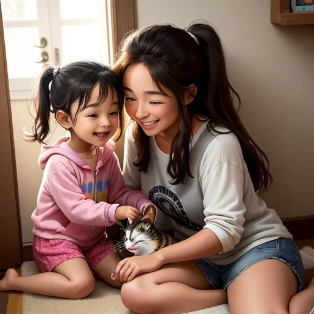
Mesmo quando Estrelinha se metia em encrencas, Maria Julia sempre estava lá para ajudá-lo. Eles eram
uma dupla perfeita, compartilhando a mesma energia e espírito aventureiro.
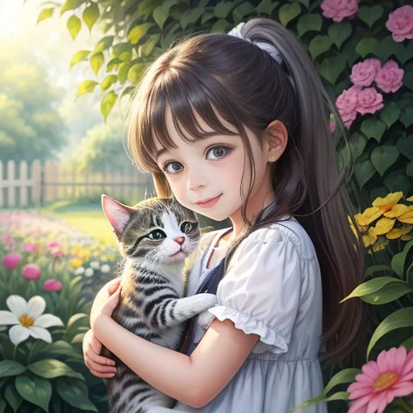
A história de Maria Julia e Estrelinha era conhecida por toda a comunidade. As pessoas admiravam a
amizade entre eles e a forma como cuidavam um do outro.
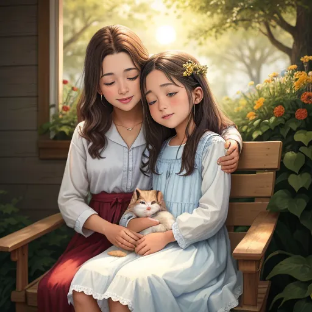
Eles eram inseparáveis, sempre juntos, seja nas aventuras pelo campo ou nos momentos tranquilos na
varanda da casa. A presença um do outro era confortante.
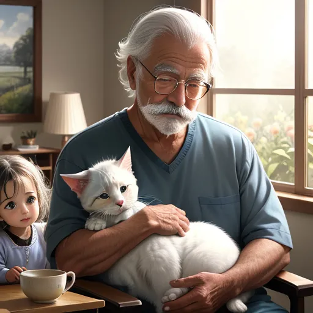
O avô de Maria Julia sempre dizia que a amizade entre eles era um exemplo para todos. Ele acreditava
que Maria Julia havia aprendido muitas lições importantes com Estrelinha.
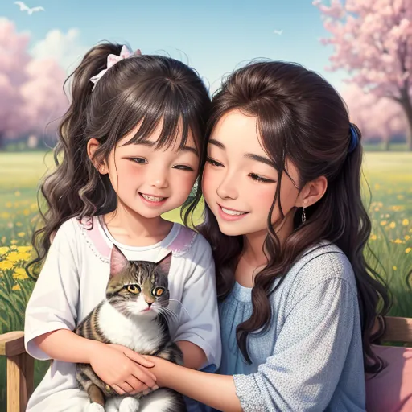
Maria Julia concordava. Estrelinha lhe ensinou sobre coragem, carinho e a importância da amizade.
Eles cresceram juntos, aprendendo e evoluindo um com o outro.
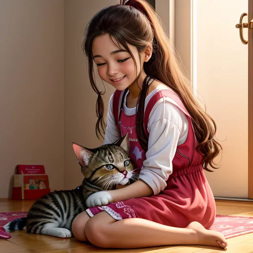
Maria Julia e Estrelinha tinham uma conexão especial. Eles entendiam um ao outro e sempre estavam lá
um para o outro, em todas as situações.
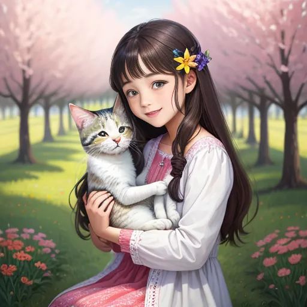
A história de Maria Julia e Estrelinha é uma história de amor, amizade e companheirismo. Eles
provaram que a amizade entre um humano e um animal pode ser a mais sincera e pura.
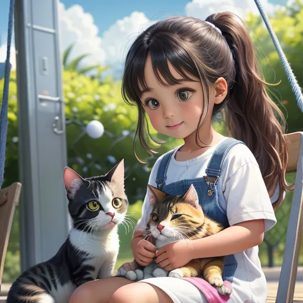
Eles viveram muitas aventuras juntos, superaram desafios e cresceram juntos. A aventura deles ainda
não acabou, pois a amizade entre eles é eterna.
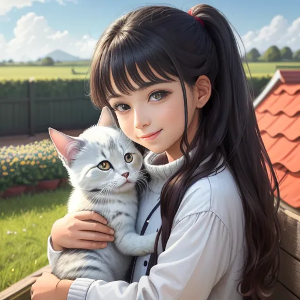
Maria Julia e Estrelinha ainda tem muitas aventuras pela frente. Cada dia é uma nova janela para
aventuras e aprendizados. E eles estão sempre prontos para enfrentá-los juntos.
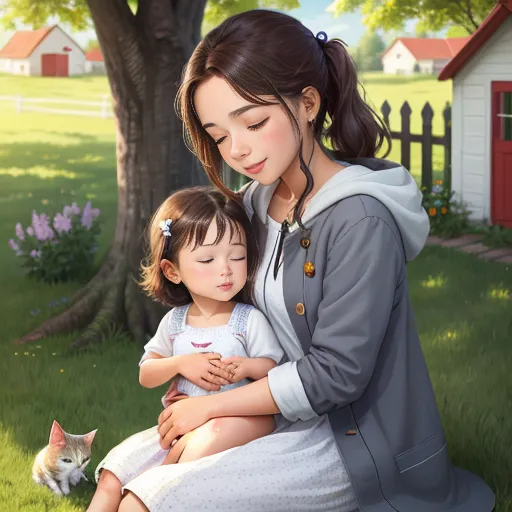
Hoje, Maria Julia e Estrelinha continuam a viver no Ceará, sempre juntos, explorando, aprendendo e
crescendo. Eles se tornaram um símbolo do verdadeiro amor e amizade.